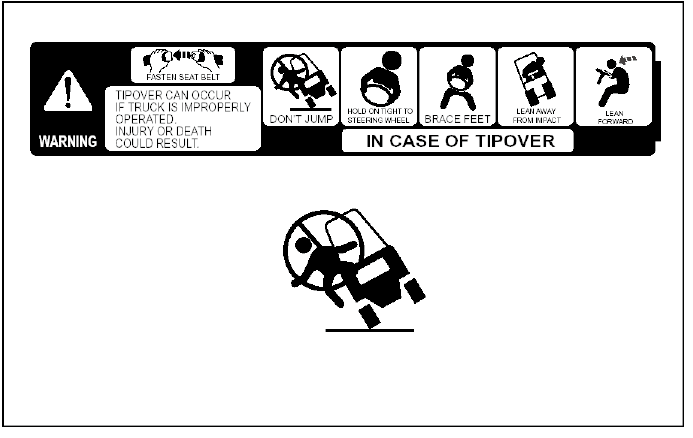
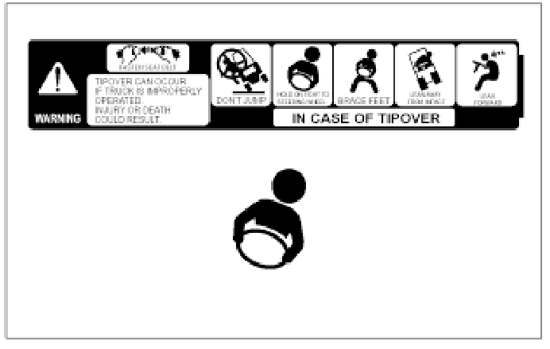
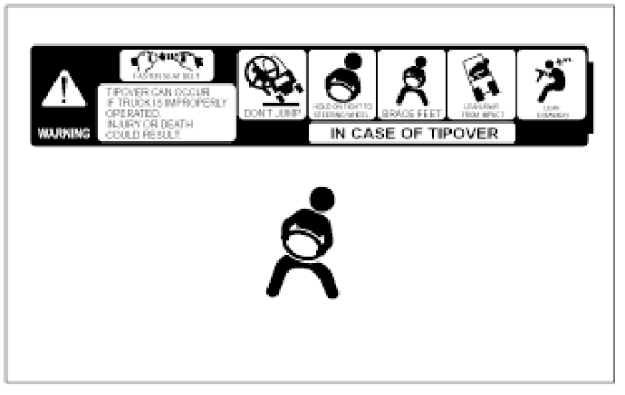

In the event of a tipover, the risk of serious injury or death will be reduced if the
operator is using the operator restraint system and follows the instructions provided.
Always use operator restraint system.

Don’t jump.

Hold on tight.

Brace your feet and keep them within the operator’s
compartment.